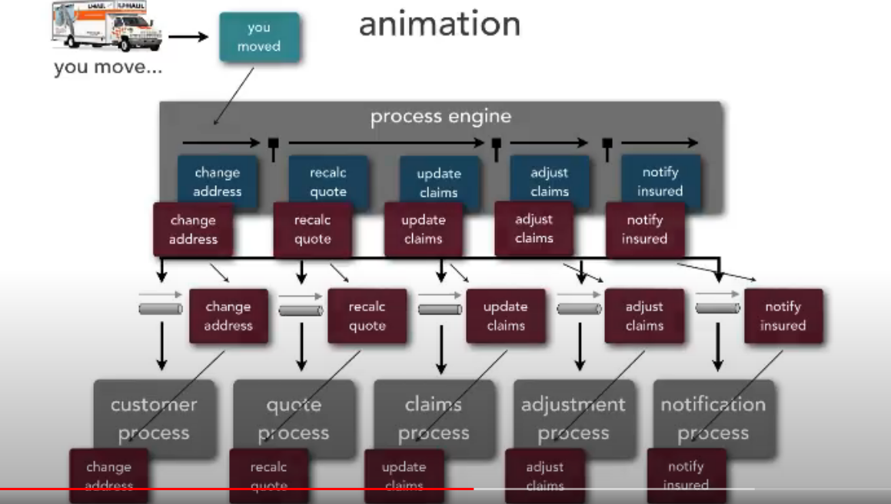
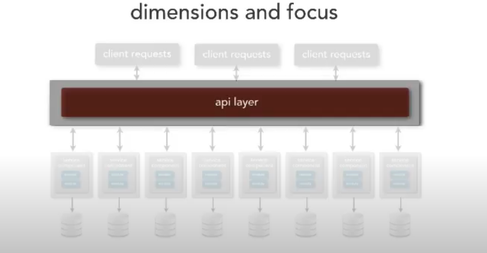

Architectural abstraction
- Location transparency
- Name transparency
- Implementation transparency
- Access decoupling
- Contract decoupling
Example 1: Messaging
It has first three but not the last two, as it has to use the messaging protocol, also it has to follow the contract.
Example 2: Adaptor
It has all five because the adaptor can handle different protocol and do the transformation, for contract the adaptor can also massage the msg to adapt to the contract.
Example 3: REST
For location transparency, it depends on how the design is. If API gateway is used, then yes, if no then no.
For the last two, no because we are stick to REST and we have to follow the contract.
Example 4: Messaging bus
Yes to all.
Circuit breaker pattern
- Simple heartbeat - just for availability
- Synthetic transactions - input with fake data, can't cover all code paths
- Real-user monitoring - monitor real data, once the latency goes up, open the breaker and implement rate limiting. Once the latency goes down, close the breaker
Component coupling
Pathological coupling
One component relies on the inner workings of another component
External coupling
Multiple components share an externally imposed protocol or data format (Example, three components rely on a REST API from another component)
Control coupling
One component passes info to another component on what to do
Data coupling
The degree to which components are bound to a shared data context
Presenting architecture
expansion joints
Have everything in a single slide, and we can expand and contract based on the audience (manager, developer)
accordion slides
Don't list all the bullet points which force you to do when you don't have enough time. Instead you have a planned time ahead and if you only can spend half of the planned time at this page, you can change a little bit, do a summary for example. If you have all bullet points listed and you don't have time to read them all, this will give audiences a feeling that you are skipping information.
animation

Instead of the screenshot above, which is overwhelming, instead you can do animation to illustrate the flow of a block in the design, which will be easier to understand.
dimension and focus

By screenshot above, audiences will know they need to focus on api layer now.
build outs
Instead of showing all the architecture, showing them piece by piece so you will have the focus from audiences. For example: client request -> api layer -> customer services -> order services -> admin services.